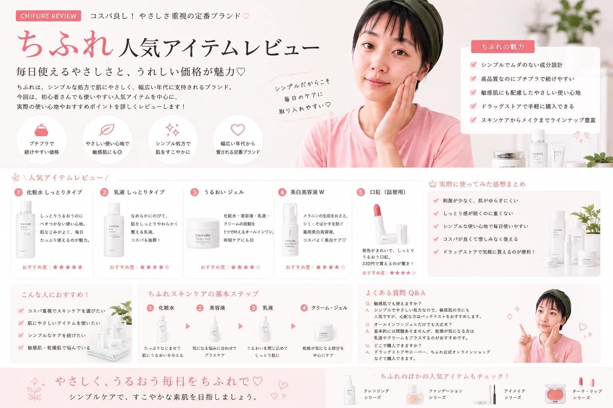

ちふれのコスメが気になっているけれど、
「何から選べばいいかわからない」
「自分に合うアイテムを知りたい」
という人も多いのではないでしょうか。
この記事では、
ちふれのコスメを選ぶときに
チェックしたいポイントを、
メイク初心者にもわかりやすく紹介します。
ちふれってどんなブランド？
ちふれは、毎日の美容に取り入れやすい
コスメやスキンケアアイテムを展開する
ブランドのひとつです。
メイク初心者が新しいコスメを試してみたいときにも、
選択肢のひとつとしてチェックしやすいブランドです。
商品によって色・質感・使い方などが異なるため、
ブランド名だけで判断するのではなく、
実際の商品情報を確認して選ぶことが大切です。

ちふれのコスメは商品ごとの特徴を確認して選ぶ
ブランドではなく「自分に必要なもの」を探す
コスメを選ぶときは、 「有名だから」「人気だから」だけではなく、 自分が今必要としているアイテムなのかを考えてみましょう。
ちふれコスメの魅力をチェック
ちふれのコスメを選ぶときは、
自分のメイクスタイルとの相性を考えることがポイントです。
「毎日使いたい」「ナチュラルに仕上げたい」
「新しい色を試してみたい」など、
目的を決めてから探すとアイテムを絞り込みやすくなります。

自分のメイクスタイルに合わせてコスメを選ぶ
DAILY
毎日のメイクに取り入れやすいアイテムを探してみましょう。
NATURAL
ナチュラルな仕上がりが好きなら、色や質感を確認して選びましょう。
TRY
いつものメイクとは違うカラーやアイテムを試すきっかけにも。
商品の最新情報や使用方法、注意事項などは、 購入前に公式の商品情報やパッケージ表示を確認しましょう。
ちふれコスメをカテゴリー別にチェック
コスメを探すときは、 「何となく良さそう」という探し方よりも、 カテゴリーから絞り込んでいくと 自分に必要な商品を見つけやすくなります。

必要なカテゴリーからコスメを探してみよう
ベースメイク
化粧下地やファンデーション、フェイスパウダーなど。
アイメイク
アイシャドウやアイライナーなど。
チーク
顔全体の印象を整えるチークをチェック。
リップ
色や質感から自分に合うものを選びます。
メイク初心者がちふれを選ぶときのポイント
初めてコスメを選ぶなら、
最初からたくさん買い揃える必要はありません。
まずは自分が必要としているアイテムを1つずつ確認して、
手持ちのコスメと組み合わせながら選んでいきましょう。

初心者は必要なアイテムから少しずつ選ぶ
目的を決める
ベースメイク、アイメイク、リップなど、まず欲しいカテゴリーを決めます。
色を確認
自分の肌や普段の服装、手持ちのコスメと合わせやすい色を確認します。
仕上がりを考える
ツヤ、ナチュラル、マットなど、好みの質感をイメージします。
商品情報を確認
使用方法や注意事項などを購入前に確認しましょう。
「必要なもの」から始めればOK
コスメは全部揃える必要はありません。 まずは今のメイクで足りないものを考えて、 必要なアイテムから少しずつ追加してみましょう。
ちふれの化粧下地を選ぶポイント
ベースメイクをきれいに仕上げるためには、
ファンデーションだけではなく、
その前に使う化粧下地も仕上がりに合わせて選ぶことが大切です。
化粧下地を選ぶときは、
自分がどのような肌の印象に仕上げたいのかを考えてみましょう。

化粧下地は仕上がりの好みから選ぶ
ナチュラルに仕上げたい
素肌感を残したナチュラルなベースメイクが好きなら、薄く均一に仕上げやすい下地をチェックしてみましょう。
明るい印象に見せたい
肌の印象を明るく見せたい場合は、トーンアップ系の仕上がりなどを商品情報で確認してみましょう。
ベースを軽くしたい
ファンデーションを厚く重ねたくない場合は、下地で肌全体の印象を整える方法もあります。
下地は少量を薄く均一に
化粧下地は、たくさん使えばよいというものではありません。 少量を薄く伸ばし、必要な部分だけ調整することで、 ベースメイクの厚塗り感を抑えやすくなります。
ちふれのファンデーションを選ぶとき
ファンデーションを選ぶときは、
色だけでなく、仕上がりやテクスチャー、
普段のメイクとの相性も確認しておきましょう。
ナチュラルに仕上げたい人と、
肌をしっかり整えて見せたい人では、
選びたいタイプも変わります。

ファンデーションは色と仕上がりを確認
| CHECK | 確認するポイント |
|---|---|
| COLOR | 自分の肌になじみやすい色か |
| FINISH | ツヤ・ナチュラルなど好みの仕上がりか |
| COVERAGE | 自然に仕上げたいか、カバー感が欲しいか |
| TEXTURE | 自分が使いやすい質感か |
| USAGE | 普段のメイクに取り入れやすいか |
ファンデーションの色や使用感は商品によって異なります。 購入前には公式の商品情報や店頭テスターなど、 利用できる情報を確認しましょう。
ファンデーションは薄く均一に
ベースメイクを自然に見せたい場合は、
ファンデーションを一度にたくさん塗るよりも、
少量ずつ薄く重ねることを意識してみましょう。
顔の中心部分から外側へ向かってなじませるようにすると、
厚塗り感を調整しやすくなります。

ファンデーションは少量ずつ薄く重ねる
少量を取る
最初から多く取りすぎず、少量からスタートします。
顔の中心から広げる
頬などの中心部分から外側へ向かって薄くなじませます。
境目をなじませる
フェイスラインなどの境目を自然になじませます。
必要な部分だけ重ねる
もう少し整えたい部分だけに少量を追加します。
全体を厚くするより、部分的に調整
肌全体にファンデーションを重ね続けるのではなく、 気になる部分だけを少しずつ調整してみましょう。
コンシーラーは気になる部分にポイント使い
コンシーラーは、肌全体に塗るというよりも、
気になる部分をポイントで整えるために使いやすいアイテムです。
使用するときは、少量をのせてから
周囲との境目をなじませることを意識しましょう。

コンシーラーは必要な部分に少量ずつ使用
目元
目元は動きが多い部分なので、必要なところに少量ずつ使い、薄くなじませます。
気になる部分
カバーしたい部分だけに少量をのせ、周囲との境目を自然になじませます。
色ムラ
広い範囲に厚く塗らず、必要な場所を中心に少しずつ調整します。
重ねすぎないことも大切
コンシーラーを重ねすぎると、その部分だけ厚く見える場合があります。 最初は少量から使い、足りないと感じたところだけ少しずつ追加しましょう。
フェイスパウダーでベースメイクを仕上げる
ベースメイクの最後には、フェイスパウダーを使って
肌の質感を整える方法があります。
顔全体に同じ量をつけるのではなく、
仕上がりの好みに合わせて必要な部分を中心に使用するのもポイントです。

フェイスパウダーは必要な部分を中心に調整
テカリが気になる部分
気になる部分を中心に、少量ずつパウダーをのせます。
ツヤを残したい部分
ツヤ感を残したい場所は、パウダーの量を控えめに調整します。
最後に全体を確認
鏡から少し離れて、粉っぽくなっていないか全体を確認しましょう。
パウダーは少量から
パウダーをつけすぎると、仕上がりが粉っぽく見える場合があります。 少量から始めて、必要な部分だけ追加するようにすると質感を調整しやすくなります。
ちふれのアイシャドウを選ぶポイント
アイシャドウは、色や質感によって
目元の印象を大きく変えられるポイントメイクアイテムです。
初心者の場合は、普段のメイクに取り入れやすい色から選ぶと使いやすいでしょう。
ブラウンやベージュなどのなじみやすいカラーは、
日常のメイクにも取り入れやすい選択肢です。

アイシャドウは普段使いやすい色から選ぶ
ベージュ系
肌になじみやすく、ナチュラルな目元を作りたいときに。
ブラウン系
普段のメイクに取り入れやすい定番カラー。
ポイントカラー
いつものメイクに少し変化を加えたいときにチェックしたいカラー。
最初は使い回しやすい色から
初めてアイシャドウを購入するなら、 手持ちの服やリップなどとも組み合わせやすい色を選ぶと、 使用する機会を増やしやすくなります。
アイライナーで目元の印象を調整
アイライナーは、目元の輪郭を整えたり、
メイク全体の印象を調整したりするときに使いやすいアイテムです。
初心者は最初から太いラインを引こうとせず、
まつ毛の際を意識して少しずつ描いてみましょう。

アイラインは少しずつ描いてバランスを確認
ナチュラルに
まつ毛の際を中心に細く描くことで、控えめな目元に仕上げやすくなります。
目尻を調整
目尻の長さや角度を少し変えるだけでも、目元の印象を調整できます。
左右を確認
片方だけ描きすぎないよう、両目を交互に確認しながら調整してみましょう。
アイライナーは一度に完璧なラインを描こうとせず、 短い線をつなげるように少しずつ描くと調整しやすくなります。
ちふれのチークで顔色を明るい印象に
チークは、頬に血色感をプラスして
メイク全体のバランスを整えるアイテムです。
色を選ぶときは、リップやアイシャドウとの組み合わせも考えてみましょう。
ポイントメイクの色を近いトーンでまとめると、
統一感のあるメイクを作りやすくなります。

チークは顔全体の色バランスを見ながら選ぶ
色を確認
肌になじむ色や、普段のメイクに合わせやすい色をチェックしましょう。
全体を見る
アイシャドウやリップとの色のバランスも確認します。
少量から
最初から濃く入れず、少しずつ色を重ねて調整しましょう。
チークは「足す」より「調整」
チークは少量からスタートして、 鏡を見ながら少しずつ色を追加するのがおすすめです。
ちふれのリップを選ぶポイント
リップは、顔全体の印象を変えやすいポイントメイクアイテムです。
色を選ぶときは、自分の好みだけではなく、
アイシャドウやチークとの組み合わせも考えてみましょう。
毎日使うなら、普段の服装やメイクに合わせやすいカラーを選ぶと活用しやすくなります。

リップはメイク全体の色バランスを考えて選ぶ
普段使い
毎日のメイクに合わせやすい自分が使いやすいカラーを選んでみましょう。
ナチュラル
アイメイクを主役にしたい日は、全体のバランスを考えてリップを選びます。
アクセント
リップを主役にしたい場合は、目元やチークを控えめにする方法もあります。
リップの色は、実際に塗ったときの見え方が人によって異なる場合があります。 購入前に商品情報や色見本、店頭で確認できる場合はテスターなども参考にしましょう。
ちふれコスメでポイントメイクを組み合わせる
アイシャドウ・チーク・リップは、
それぞれ単体で選ぶだけでなく、
3つの色のバランスを考えるとメイク全体をまとめやすくなります。
すべてを同じ色にする必要はありませんが、
色味や明るさのバランスを意識してみましょう。

ポイントメイクは全体の色バランスを意識
ナチュラルメイク
ベージュ・ブラウンなどなじみやすいカラーを中心に、全体を控えめにまとめます。
やわらかい印象
アイメイク・チーク・リップの色味を近づけて、やさしい印象にまとめます。
リップを主役に
リップをアクセントにして、アイメイクやチークを控えめにまとめる方法です。
「全部を濃くしない」がポイント
アイメイク・チーク・リップをすべて濃くするのではなく、 どこを主役にするかを決めるとメイク全体のバランスを整えやすくなります。
今日のメイクを決める3 CHECK
- 01アイメイクはどのくらい強くする？
- 02チークはどのくらい血色感を足す？
- 03リップを主役にする？なじませる？
ちふれコスメを購入する前にチェック
コスメを購入するときは、
パッケージの印象やカラーだけで決めず、
商品の特徴や使用方法なども確認しておきましょう。
特に初めて使うアイテムは、
自分のメイクスタイルに取り入れやすいかを考えることが大切です。

購入前に商品情報を確認してから選ぼう
色を確認
自分の肌や普段のメイクに合わせやすいカラーか確認。
仕上がりを確認
ツヤ・ナチュラルなど、自分が求める仕上がりかチェック。
使用方法を確認
商品ごとの使用方法を購入前に確認しておきましょう。
注意事項を確認
パッケージや公式の商品情報に記載されている注意事項を確認。
手持ちのコスメと合わせる
すでに持っているアイテムと組み合わせやすいか考えます。
初心者向け・ちふれコスメチェックリスト
「何を買えばいいかわからない」という場合は、
欲しいものをカテゴリーごとに整理してみましょう。
すべてを一度に購入する必要はありません。
今のメイクに足りないものから少しずつ選ぶのがおすすめです。
ベースメイク
化粧下地・ファンデーション・コンシーラー・フェイスパウダー
アイメイク
アイシャドウ・アイライナーなど
チーク
顔全体の色味と合わせて使いやすいカラーを選ぶ
リップ
普段のメイクや服装に合わせやすいカラーを確認

必要なカテゴリーから少しずつ揃えていこう
最初から全部揃えなくても大丈夫
メイク初心者なら、まずは今使っているコスメを確認して、 足りないアイテムを優先して選びましょう。 「ベースメイクだけ」「アイメイクだけ」など、 カテゴリーを絞って探すと選びやすくなります。
ちふれコスメについてよくある質問
Q1 ちふれのコスメは初心者でも使いやすい？
初めてコスメを選ぶ場合でも、
自分のメイクスタイルや欲しいアイテムを整理してから選ぶと、
商品を比較しやすくなります。
まずは必要なカテゴリーから探してみましょう。
Q2 最初にどのコスメを選べばいい？
現在のメイクで足りないアイテムから選ぶのがおすすめです。 ベースメイクが必要なら化粧下地やファンデーション、 ポイントメイクならアイシャドウやリップなど、 目的を決めて探してみましょう。
Q3 カラーはどうやって選べばいい？
肌になじみやすい色だけでなく、 普段の服装や手持ちのコスメとの組み合わせも考えてみましょう。 実際の色味を確認できる場合は、 商品情報や店頭での確認も参考になります。
Q4 ナチュラルメイクにしたい場合は？
ベースメイクを薄く整え、 アイメイク・チーク・リップを少量ずつ使って 全体のバランスを確認してみましょう。 すべてを濃くするのではなく、 どこを主役にするかを決めるのもポイントです。
Q5 購入前に確認しておきたいことは？
商品の色・仕上がり・使用方法・注意事項などを確認しましょう。 商品情報は変更される場合があるため、 購入時には最新の公式情報やパッケージ表示を確認してください。
ちふれコスメレビュー｜まとめ

ちふれのコスメを選ぶときは、 ブランドだけで決めるのではなく、 自分のメイクスタイルや欲しい仕上がりを考えて 商品を選ぶことが大切です。
目的から選ぶ
今の自分に必要なコスメカテゴリーを決める。
色と仕上がりを確認
肌や手持ちのコスメとの相性を考える。
少しずつ揃える
必要なアイテムから無理なく追加する。
最新情報を確認
購入前に公式の商品情報やパッケージ表示をチェック。


少ない予算で、最大限かわいく。
メイク・スキンケア・美容を
初心者にもわかりやすく紹介しています。
自分に合う美容アイテムを少しずつ見つけていきましょう。